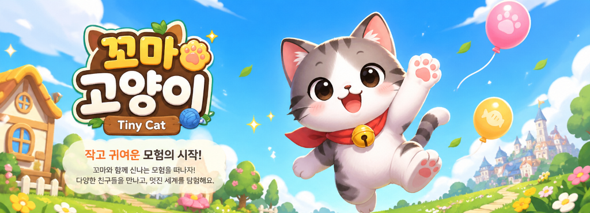

꼬마 고양이 (Tiny Cat)
작고 여린 아기 고양이 꼬마가 세상과 다시 마음을 열어가는 따뜻한 여정.

꼬마 고양이(Tiny Cat)는 감성적인 스토리와 성장 시스템이 어우러진 2D 탑다운 스토리 어드벤처 RPG입니다. 버려진 상처를 가진 꼬마는 어느 날, 따뜻한 마음의 쥐 래칫을 만나 새로운 삶을 시작하게 됩니다. 하지만 쉽게 마음을 열지 못하는 꼬마는 낮 동안 마을 곳곳을 돌아다니며 동물 친구들을 돕고, 조금씩 자신과 세상을 믿는 법을 배워갑니다.
🌟 게임 특징
🐾 감동적인 힐링 스토리
버려진 기억과 외로움을 품은 꼬마가 타인을 돕고 친구들과 유대감을 쌓으며 스스로를 치유해 나가는 이야기.
🏘️ 개성 넘치는 세계관
챕터 1의 배경 크랙 타운은 하수구 위에 세워진 독특한 동물 마을입니다. 각자의 일터와 사연을 가진 동물 주민들, 그리고 지하를 지배하는 세 개의 조직까지—탐험할수록 새로운 이야기가 펼쳐집니다.
📖 깊이 있는 퀘스트 시스템
메인 퀘스트를 따라 엔딩을 향해 나아가거나, 서브 퀘스트를 통해 동물 친구들의 숨겨진 사연을 만나보세요.
📈 성장하는 꼬마
퀘스트와 미니게임을 통해 꼬마의 능력을 키워보세요. (체력, 속도, 점프력, 동체 시력, 발성 능력)
⚡ 전략적인 행동력 시스템
하루에는 한계가 있습니다. 퀘스트를 먼저 할지, 미니게임으로 성장할지, 아이템으로 회복할지—매일의 선택이 모험의 방향을 결정합니다.
💛 이런 분께 추천합니다
📱 플랫폼
iOS / Android 출시 예정
🐱 꼬마와 함께 새로운 하루를 시작하세요
누군가를 돕는 일이, 결국 자신을 구하는 일이 될 수도 있습니다. 작고 소중한 고양이 꼬마와 함께 웃음과 감동이 가득한 모험을 떠나보세요.